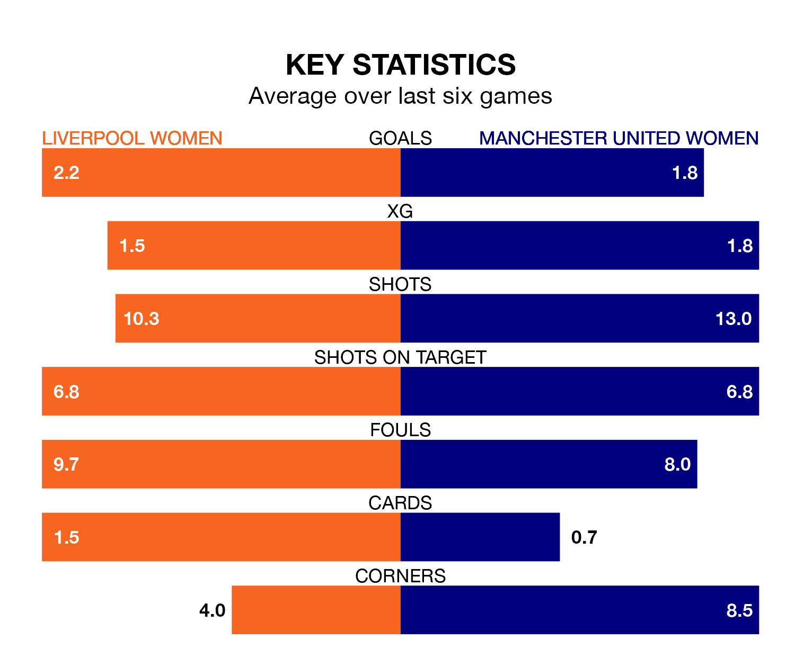

Manchester United Women are strong favourites to take all three points despite Liverpool Women's home advantage in Sunday's early match at Prenton Park.
*Betting Company* are offering odds of 1.99 on Manchester United sealing the win, with the visitors sitting fourth in the FA Women's Super League table.
Liverpool, who are fifth in the league behind the Red Devils, are priced at 2.59 to win. A draw is set at 3.67.
With 42 goals in 20 games so far this season, Manchester United are scoring more than average in the league with 2.1 goals per game. And they are conceding fewer than average, letting in 25 goals at a rate of 1.2 per game.
Liverpool, meanwhile, are average scorers, with 1.6 goals per game. They have conceded 1.4 goals per game.
In Mary Earps, the Red Devils can rely on one of the league's safest pair of hands. She has kept seven clean sheets in her 20 appearances this season, and only one other 'keeper – Manchester City Women's Khiara Keating – has been able to prevent the opposition scoring on more occasions in the FA Women's Super League.
In the hosts' net, Rachael Laws has four clean sheets in 14 games. She has conceded a goal every 74 minutes, only slightly more often than the 75 minutes between goals for Earps.
In the last 10 years, Liverpool and Manchester United have played each other on seven occasions. Liverpool won two of them and Manchester United five.
On average, Liverpool scored 0.7 goals and the Red Devils 1.9 in those matches.
Their last meeting was on December 17, when Liverpool won 2-1 away.
Liverpool are in good form in the FA Women's Super League, with four wins and a draw from their last six games.
With three wins and two draws over that period, the away team's form is slightly worse – they have taken 11 points from 18, compared to Liverpool's 13.
Liverpool's last match was on Wednesday, a 4-3 win against Chelsea Women, with Gemma Bonner (two), Leanne Kiernan and Sophie Roman Haug getting the goals for Liverpool.
Manchester United beat Leicester City WFC 1-0 last time out, on Sunday, with Ella Toone on the scoresheet.
Updated: 12:00 (UTC), 02/05/24